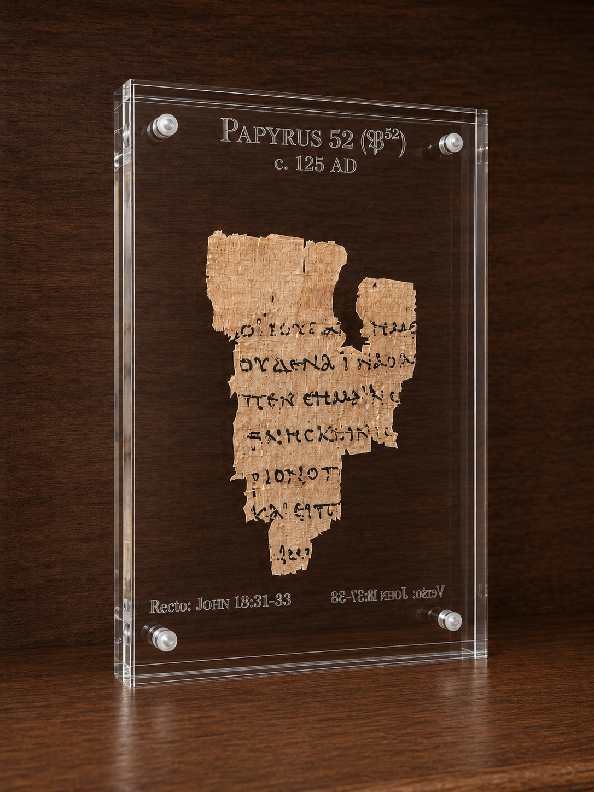
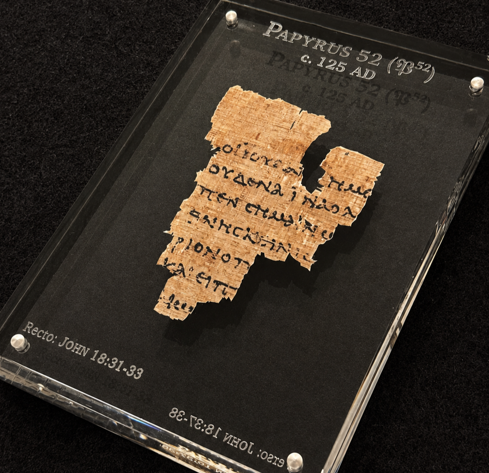
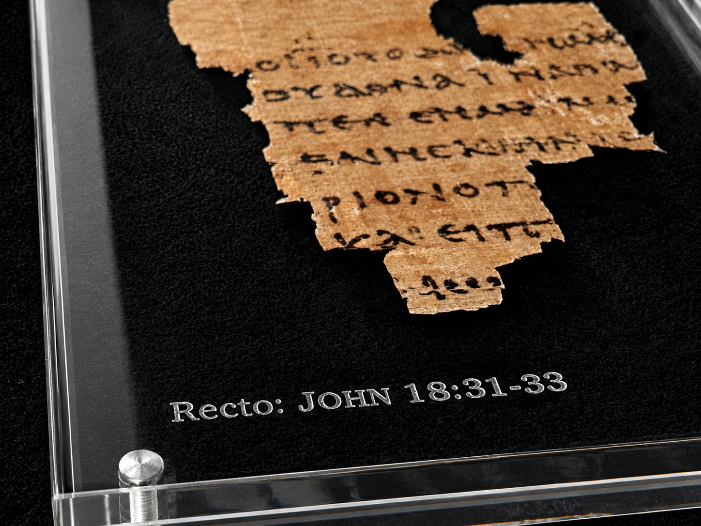
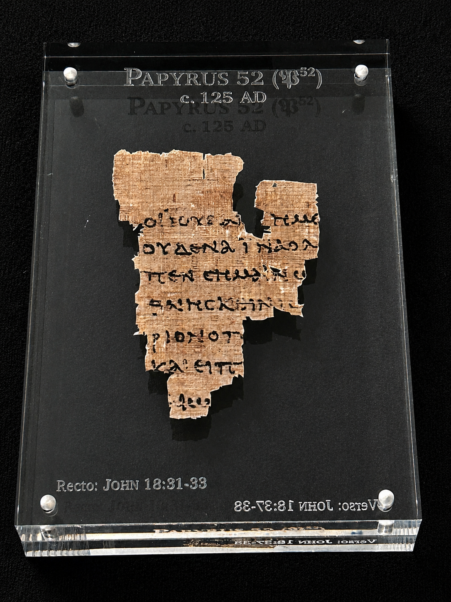
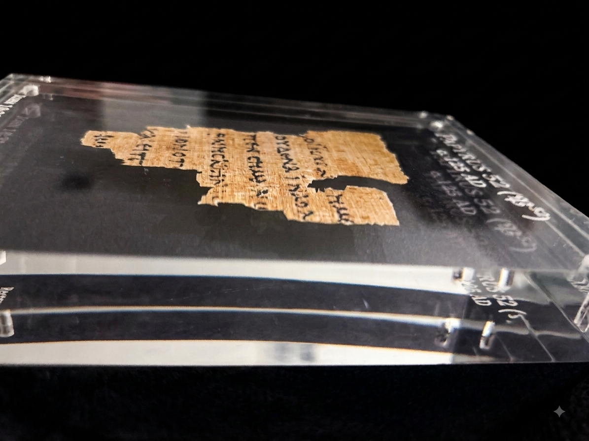

The flagship of the P52 collection. This version of the Curator's Prism features high-precision laser engraving directly on the surfaces of the acrylic.
The Recto (front) frame clearly identifies the manuscript details in a clean, modern typeface that seems to float above the papyrus itself. The specific scripture references are engrave[...]
Includes custom double-sided translation card and microfiber cleaning cloth.